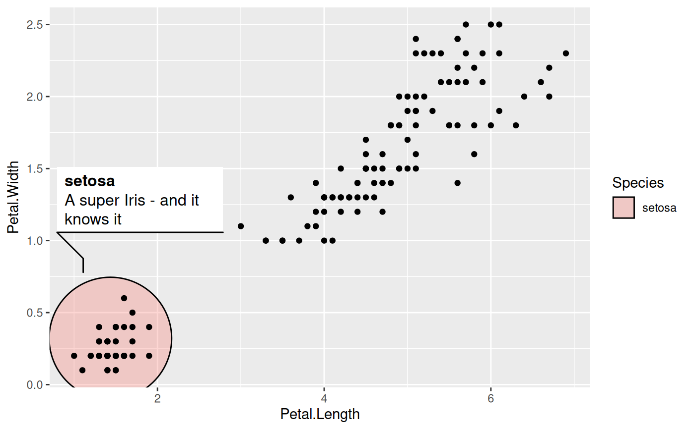
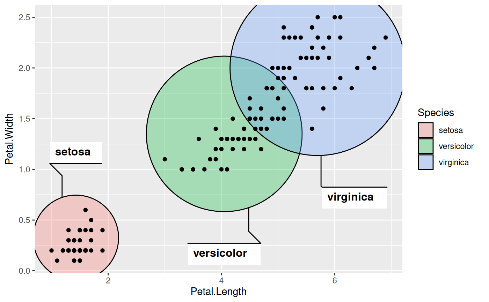

This geom lets you annotate sets of points via circles. The enclosing circles
are calculated at draw time and the most optimal enclosure at the given
aspect ratio is thus guaranteed. As with the other geom_mark_* geoms the
enclosure inherits from geom_shape() and defaults to be expanded slightly
to better enclose the points.
geom_mark_circle(
mapping = NULL,
data = NULL,
stat = "identity",
position = "identity",
expand = unit(5, "mm"),
radius = expand,
n = 100,
label.margin = margin(2, 2, 2, 2, "mm"),
label.width = NULL,
label.minwidth = unit(50, "mm"),
label.hjust = 0,
label.fontsize = 12,
label.family = "",
label.lineheight = 1,
label.fontface = c("bold", "plain"),
label.fill = "white",
label.colour = "black",
label.buffer = unit(10, "mm"),
con.colour = "black",
con.size = 0.5,
con.type = "elbow",
con.linetype = 1,
con.border = "one",
con.cap = unit(3, "mm"),
con.arrow = NULL,
...,
na.rm = FALSE,
show.legend = NA,
inherit.aes = TRUE
)Set of aesthetic mappings created by aes() or
aes_(). If specified and inherit.aes = TRUE (the
default), it is combined with the default mapping at the top level of the
plot. You must supply mapping if there is no plot mapping.
The data to be displayed in this layer. There are three options:
If NULL, the default, the data is inherited from the plot
data as specified in the call to ggplot().
A data.frame, or other object, will override the plot
data. All objects will be fortified to produce a data frame. See
fortify() for which variables will be created.
A function will be called with a single argument,
the plot data. The return value must be a data.frame, and
will be used as the layer data. A function can be created
from a formula (e.g. ~ head(.x, 10)).
The statistical transformation to use on the data for this layer, as a string.
Position adjustment, either as a string, or the result of a call to a position adjustment function.
A numeric or unit vector of length one, specifying the expansion amount. Negative values will result in contraction instead. If the value is given as a numeric it will be understood as a proportion of the plot area width.
As expand but specifying the corner radius.
The number of points used to draw each circle. Defaults to 100
The margin around the annotation boxes, given by a call
to ggplot2::margin()
A fixed width for the label. Set to NULL to let the text
or label.minwidth decide
The minimum width to provide for the description. If the size of the label exceeds this, the the description is allowed to fill as much as the label
The horizontal justification for the annotation. If it contains two elements the first will be used for the label and the second for the description.
The size of the text for the annotation. If it contains two elements the first will be used for the label and the second for the description.
The font family used for the annotation. If it contains two elements the first will be used for the label and the second for the description.
The height of a line as a multipler of the fontsize. If it contains two elements the first will be used for the label and the second for the description.
The font face used for the annotation. If it contains two elements the first will be used for the label and the second for the description.
The fill colour for the annotation box.
The text colour for the annotation. If it contains two elements the first will be used for the label and the second for the description.
The size of the region around the mark where labels cannot be placed.
The colour for the line connecting the annotation to the mark
The width of the connector
The type of the connector. Either "elbow", "straight", or
"none".
The linetype of the connector
The bordertype of the connector. Either "one" (to draw a
line on the horizontal side closest to the mark), "all" (to draw a border
on all sides), or "none" (not going to explain that one)
The distance before the mark that the line should stop at.
An arrow specification for the connection using
grid::arrow() for the end pointing towards the mark
Other arguments passed on to layer(). These are
often aesthetics, used to set an aesthetic to a fixed value, like
colour = "red" or size = 3. They may also be parameters
to the paired geom/stat.
If FALSE, the default, missing values are removed with
a warning. If TRUE, missing values are silently removed.
logical. Should this layer be included in the legends?
NA, the default, includes if any aesthetics are mapped.
FALSE never includes, and TRUE always includes.
It can also be a named logical vector to finely select the aesthetics to
display.
If FALSE, overrides the default aesthetics,
rather than combining with them. This is most useful for helper functions
that define both data and aesthetics and shouldn't inherit behaviour from
the default plot specification, e.g. borders().
All geom_mark_* allows you to put descriptive textboxes connected to the
mark on the plot, using the label and description aesthetics. The
textboxes are automatically placed close to the mark, but without obscuring
any of the datapoints in the layer. The placement is dynamic so if you resize
the plot you'll see that the annotation might move around as areas become big
enough or too small to fit the annotation. If there's not enough space for
the annotation without overlapping data it will not get drawn. In these cases
try resizing the plot, change the size of the annotation, or decrease the
buffer region around the marks.
Often marks are used to draw attention to, or annotate specific features of
the plot and it is thus not desirable to have marks around everything. While
it is possible to simply pre-filter the data used for the mark layer, the
geom_mark_* geoms also comes with a dedicated filter aesthetic that, if
set, will remove all rows where it evalutates to FALSE. There are
multiple benefits of using this instead of prefiltering. First, you don't
have to change your data source, making your code more adaptable for
exploration. Second, the data removed by the filter aesthetic is remembered
by the geom, and any annotation will take care not to overlap with the
removed data.
geom_mark_circle understand the following aesthetics (required aesthetics are in bold):
x
y
filter
label
description
color
fill
group
size
linetype
alpha
Other mark geoms:
geom_mark_ellipse(),
geom_mark_hull(),
geom_mark_rect()
ggplot(iris, aes(Petal.Length, Petal.Width)) +
geom_mark_circle(aes(fill = Species, filter = Species != 'versicolor')) +
geom_point()
# Add annotation
ggplot(iris, aes(Petal.Length, Petal.Width)) +
geom_mark_circle(aes(fill = Species, label = Species)) +
geom_point()
# Long descriptions are automatically wrapped to fit into the width
iris$desc <- c(
'A super Iris - and it knows it',
'Pretty mediocre Iris, but give it a couple of years and it might surprise you',
"You'll never guess what this Iris does every Sunday"
)[iris$Species]
ggplot(iris, aes(Petal.Length, Petal.Width)) +
geom_mark_circle(aes(fill = Species, label = Species, description = desc,
filter = Species == 'setosa')) +
geom_point()

# Change the buffer size to move labels farther away (or closer) from the
# marks
ggplot(iris, aes(Petal.Length, Petal.Width)) +
geom_mark_circle(aes(fill = Species, label = Species),
label.buffer = unit(30, 'mm')) +
geom_point()
# The connector is capped a bit before it reaches the mark, but this can be
# controlled
ggplot(iris, aes(Petal.Length, Petal.Width)) +
geom_mark_circle(aes(fill = Species, label = Species),
con.cap = 0) +
geom_point()
